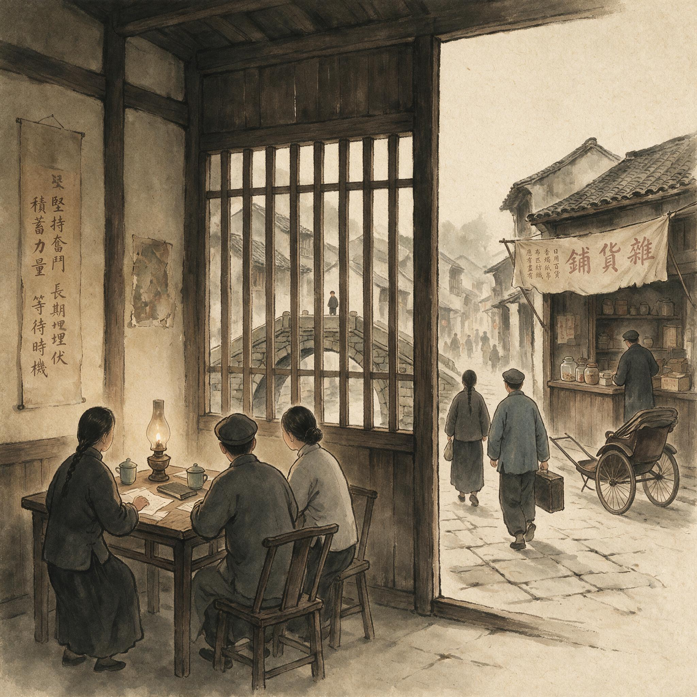

第 5 章
白区工作的本地化改造
一份白区工作指示在陕北印出时，纸面上的用语已经和五年前截然不同。它不是宣言，也不是行动纲领，而是一份关于干部职业化的通知。通知要求各城市党组织“求得职业”“巩固社会关系”“积蓄力量”，并把那些能在地方上长期停留、不与组织频繁接触的党员视为“可用的支点”。文件列出几类应当设法进入的职业：教育界、邮政、商会、旧政权行政机构。一个醒目的变化是，它没有使用“发动”“组织”“占领”这些昔日常用的动词。评判城市工作的尺度，从能否掀起一场公开声势，转向能否维持一种不引人注意的存在。
这种语言上的转变并非源于理论上的顿悟。它是一系列组织失败之后被迫形成的结论。

白区工作的本地化改造：历史出版插图
AI 生成插图，非史实影像。
1935年秋，中共中央随陕甘支队抵达陕北吴起镇，长征宣告结束。红军在军事上获得喘息，但白区工作已经所剩无几。上海、北平、天津等地的地下党在国民党特务机关和租界警务部门的联合挤压下，早已丧失完整的行动链条。
1931年顾顺章叛变后确立的单线联系制度保住了残余，却保住的是一批彼此隔绝、无法聚合的锚点。到了1935年，城市中能够活下来的组织性存在，零星分布于职业掩护和本地关系网内，而非存在于指令传递的效率之中。有交通员在弄堂里保存着半年的经费，没有用掉一毫，因为没有可用的联络线。有干部在纱厂区继续以工人身份活动，却不再被分配任何宣传任务。所有迹象都指向同一个事实：城市里的党并未死灭，但失去了协同行动的机制。
从低谷里恢复，首先需要的不是重建横向联系。这个问题在1935年的环境下几乎无法正面回答。因为横向联系一旦恢复，就重新制造出可供追索的网络密度。
真正的转折在于组织目标发生了变化。当陕北开始重新讨论白区方针时，首先要回答的问题不是“如何在城市里重新作战”，而是“城市里的组织究竟还要不要存在，如果存在，它应当承担什么功能”。
1920年代末至1930年代初，城市地下党的大致理想型是职业革命家。他们脱离生产，由党提供微薄经费，集中住机关、刻蜡版、跑交通、组织飞行集会和街头演讲。这种模式的预设是：革命高潮将在短时间内到来，秘密组织只需在爆发前维持政治动员的节奏。
它使地下党员的价值被压缩为“能行动”——能在窗口期内制造公开声势，能散传单、能集会、能策动罢工和兵变。但事实反复证明，在租界和华界警力、国民党中统与军统前身机构不断收紧的城市空间里，这种声势往往以破坏和逮捕告终。
每一次大破坏，苏区在人才调度上承担着不成比例的代价。上海方面一度为了输送一名有军事指挥经验的干部，被调方需要穿越多层单线信息链，耗掉数周甚至数月的组织时间。
这种节奏错位说明，白区的行动能力已经低到无法支撑跨区域协作的层级。城市组织不再是一个可以随时点燃的炸弹，而是一堆散落各处的引线，彼此无法连接，每一次试图连接都会带来新的暴露。
中共中央到达陕北后，面对的正是这样一套几乎失去行动价值的白区网络。批评的声音开始集中在两个词上：关门主义与公开冒险。前者指把党局限在左翼小圈子里，不愿接近任何政治上不够纯的同情者；后者指在明知道敌我力量悬殊的情况下，仍把公开或半公开活动作为维持政治存在的证明。两者看似矛盾，实则同源：都假设城市的价值在于呈现公开的政治力量。
这个假设一旦瓦解，白区工作的组织原则就必须重写。重写的路径，是向“长期埋伏”倾斜。这个核心概念并非以理论宣言的面目出现，而是从具体指令中逐步浮出。文件里反复出现的语句，不再是“发动”“组织”“占领”，而是“求得职业”“巩固社会关系”“积蓄力量”。
1935年秋的白区工作指示中，“职业化”成为出现频率最高的要求之一。一份内部通报规定，凡能在城市中获得稳定职业和合法居住条件的党员，应尽量减少与组织的横向接触；非经特别批准，不得随意弃职。
这里出现了一个关键的制度转向：党员的生存不再是行动的附属条件，而是秘密工作的本体。
没有合法身份，就没有组织存在的物理基础。没有邻里、雇主、同业和保甲的日常信任，就没有活动空间。
换句话说，党员的价值发生了位移：从“能在窗口期完成任务”，转向“能在长时间内留在原地”。这一位移并不容易。它要求干部重新理解“工作”这个词的含义。过去，工作是行动、鼓动、组织、建立支部、发动斗争。
现在，工作首先是谋得一份职业、租下一处住所、在邻里中建立不引起怀疑的日常存在。这种工作没有明显的政治产出，甚至在党内的报告中也无法形成英雄式的叙述。但它构成了秘密组织最基础的资源：一个自然合法的身份，可以让党员在敌占区长期存活，可以在需要时成为一个信息节点或掩护通道。二、精干广布的组织形态
这种转向带来了对人的重新评价。过去，一个理想的秘密工作者是有文化、能写传单、能在工厂门口演说的青年骨干。他们的活动容易产生政治绩效，但也最容易进入敌人的记忆范围。
1935年以后，组织开始强调本地干部的社会根基。一个会讲本地方言、有家庭联系、能在某个行业中拥有稳定身份的党员，往往比一个外地来的活动家更能承受白色恐怖。因为他们的存在并不依赖党的经费，也不依赖秘密交通线，而依赖日常生活中的自然合法性。
这个人不必总是出现在党内名册上，他甚至可能被组织“闲置”半年以上。但只要他仍留在那个职业和住所里，他就构成了一个可用的支点。
这种观点在陕北的文件与工作汇报里逐渐得到肯定。它意味着秘密组织的质量单位从“人”变成了“位置”。一个被嵌入邮政系统、学校、商会或旧政权基层机构的党员，其价值不在于随时待命，而在于当他被需要时，那个位置本身能够起作用。这与苏联模式中的“职业革命家”形成明显差异。
苏俄的地下工作传统强调党的职业干部——他们由党直接供养，全身心投入秘密活动，与普通社会成员保持距离。但在中国白区，这种模式始终面临一个矛盾：职业革命家极易引起注意，他们聚居的机关和频繁的活动轨迹往往是破坏行动的突破口。而有稳定职业的嵌入式党员，则能在不被察觉的情况下融入城市社会的日常运转。
本地干部的价值因此被重新评价。在语言、习俗、亲属关系和职业网络上，本地人具有外来革命者无法复制的能力。他们知道哪条街的巡捕最容易被买通，知道某个同业公会里谁有实权，知道如何在一封商业信函中自然地传递暗语。这些知识不是从训练班学来的，而是从生活中累积的。它们在党员干部的评估体系中一度被视为“旧社会习气”，在1935年之后则开始被视为一种稀缺资源。
组织发展的方针也跟着起变化。过去白区组织追求数量，追求在工厂、学校、码头扩展小组和支部。1935年以后，这种追求被压了下来。内部文件更频繁地强调“精干”“隐蔽”“广布”。
数量不再是安全感的来源，反而成了暴露面的放大器。一个支部再有战斗力，只要其中一个人的关系链与外围同情者重叠过多，就可能被一次顺藤摸瓜的行动吞掉。
因此，宁可在同一城市中保持若干互不交叉的小组，也不让负责人彼此知悉真实身份。这看起来仍是单线联系制度的延续，但重心已经不同：过去的单线是为了在叛变发生时阻断追踪链，保护核心机关；如今的单线则首先是为了保护合法身份，维持机构上的长期存在。
横向联系并未重建，反而被进一步压制。1935年上海残存组织的静默，不再被描述为失败，而被定性为一种可以接受的蛰伏。
这一变化在秘密工作的任务类型上同样留下痕迹。白区支部不再以散发传单或策动罢工为第一要务。它们更常见的功能，是搜集某一职业群体中的情绪与关系变动、传递特定机构的异动消息、为可能出现的合法半合法活动提供掩护线索。这种工作低烈度、长周期，难以形成英雄式的报告，也难以与过去那种“断然行动”的形象相比。
在苏区和后来的根据地，很多人仍然把白区工作视为软弱的、消极的，甚至怀疑白区干部是否已经“革命意志衰退”。这种观念的张力贯穿于本地化改造的全过程。三、合法身份与纪律边界
进入1936年之后，中共在北方与西北的处境已有微妙变化。抗日情绪的高涨改变了城市中的政治空间。过去被视为激进活动的街头抗日宣传，在一些学校、同乡会、职业补习班和商会中获得了新的合法形式。这给白区工作提供了半公开的空间。
但纪律并没有因此放松。因为在统一战线的气息中，组织边界反而更容易模糊。一个公开的救国会与一个秘密支部之间，往往只隔着几层私人关系。党必须决定如何在不丧失控制的前提下，让党员进入这些半公开团体，并保持秘密身份不暴露。
这个问题，在本地化改造的框架里获得了一种初步解决：让党员以职业身份或社会身份进入，而不是以党支部名义进入。换句话说，身份本身就是掩护。一个小学教师加入教育界的抗日座谈会，可以只表现为一个关心时局的小学教师，而不必暴露他与党的任何关系。
统一战线的政治气候，使这种模糊性变得可能；而单线联系与职业纪律，又使这种模糊性不至于迅速崩解为全面公开。合法身份与秘密身份之间的边界，从来不是一条清晰的线。
一个党员在公开团体中待久了，不可避免地会形成新的社会关系。他在团体内可能有熟人，有公开讲话，有署名文章，有对某些人事的表态。所有这些痕迹，在当时并不显眼，却会在日后成为组织审查时的重要材料。
1935年开始推行的本地化改造，在提高了地下党的生存能力。它使城市组织不再等待一场遥远的暴动，而是像藤蔓一样附着在职业、社团和行政结构上。但代价也随之而来：这些藤蔓的根须，附着得太深，深到后来党组织自己都无法轻易区分“社会关系”与“敌伪关系”、“合法身份”与“变节嫌疑”。
旧政权机构的问题尤为突出。为了进入邮政局、税务局、警察分局、民政科等行政系统，党员必须经过保举、填表、宣誓等程序。某些地方要求公务员加入国民党。这些程序在组织内部引发了直接争论。
一部分干部认为，加入旧政权机构就是向阶级敌人让步，使党员沾染旧习气；另一些干部则反驳说，秘密工作本身就意味着利用一切合法形式，否则无法生存。
这种争论并未形成绝对结论，而是在文件中以折衷方式出现：一面强调“反对关门主义”，一面又加写“防止失掉阶级立场”；一面要求干部“职业化、社会化”，一面又提醒“不要被旧关系同化”。这种内部的语义张力，在1935年至1937年的白区工作指示中相当显眼。
从制度史的角度看，这种折衷并非软弱。它反而说明，本地化改造在推行过程中遇到的是多重逻辑的纠缠。秘密工作逻辑要求承认社会掩护的必要性，明面上的革命意识形态逻辑则拒绝承认任何形式的妥协。两者在组织文本中不断互相修正，使白区工作方针看起来摇摆而含糊。
但实际效果却是方向大致明确：城市里的人脉、职业、住所和合法身份被一点点积攒下来。到1936年，华北和华东一些城市中已出现一种不同于以往的党员形态：他们不在任何明显的左翼组织中担任职务，不参加可能遭致注意的集会，甚至在职业场合中刻意表现为对政治无兴趣。他们当中有的在教会学校教书，有的在日本洋行做低级职员，有的在码头包工头手下写账。组织与他们之间的接触频率极低，往往以月计。这种存在方式，为后来抗日统一战线初期半公开活动提供了人员基础。
然而，合法身份与秘密身份之间的边界，从来不是一条清晰的线。一个党员在公开团体中待久了，不可避免地会形成新的社会关系。他在团体内可能有熟人，有公开讲话，有署名文章，有对某些人事的表态。所有这些痕迹，在当时并不显眼，却会在日后成为组织审查时的重要材料。
1935年开始推行的本地化改造，在提高了地下党的生存能力。它使城市组织不再等待一场遥远的暴动，而是像藤蔓一样附着在职业、社团和行政结构上。但代价也随之而来：这些藤蔓的根须，附着得太深，深到后来党组织自己都无法轻易区分“社会关系”与“敌伪关系”、“合法身份”与“变节嫌疑”。
这在当年的内部报告里已经露出端倪。有的干部因为长期没有组织联系，逐渐懈怠，甚至不愿再服从调令；有的干部在职业掩护中积累了个人利益，开始拒绝冒险；有的干部与国民党地方政府部门的联系太密，以致组织不敢再恢复他的关系。
问题不在于本地化改造是否会削弱队伍的纯洁性，而在于一旦秘密工作的价值标准变成“能停留”，组织就无法再用过去那种“能行动”的标尺，去忠实评估一个人的可靠程度。生存能力本身成了一种双面资源：它维持了组织的物理存在，也为未来的内部清洗埋下了“社会关系复杂”的伏笔。
这一点在制度上还有另一层意义。本地化改造虽然使白区工作从苏俄城市暴动传统中逐步走出，却并未形成一套完整的现代职业秘密工作体系。它更像是困境中的应变，而非成熟的设计。中共中央在陕北对白区问题的讨论，很多时候是在短缺条件下作出的：缺乏干部，缺乏经费，缺乏可靠的交通线，缺乏对城市情况的最新把握。于是，“长期埋伏”有时成了掩盖组织空白的委婉说法。有的城市里其实已经没有有效组织，只有几个隐蔽的党员在维持表面联系。
文件上写“该地工作已有恢复”，实际可能只是重新找到了几条线索。这种差距，在白区工作的历史叙述中常常被忽略。但它对理解下一阶段的发展至关重要。
这一阶段大约从1935年延续到1937年前后，抗日民族统一战线政策又提供了半公开空间，使合法身份与秘密身份之间的边界更加灵活，但纪律要求并未放松。半公开空间的实质，是城市政治生态中出现了一批可以被合法触碰的议题和团体。抗日救亡这个主题，在1935年华北事变之后已经不再是少数激进分子的专利。商会领袖可以在茶会上谈论经济绝交，中学校长可以在周会上宣讲民族危机，律师公会可以发起援助绥远抗战的募捐。这些活动在法理上并不违法，在舆论上甚至得到部分地方实力派的默许。
对白区党组织而言，这意味着一个新的可能性：党员不必以地下党身份介入政治，而可以以职业身份参与这些半公开的抗日活动，在参与中接触人群、搜集信息、建立关系。但这种参与本身也制造出新的组织难题。一个以小学教员身份参加教育界救国会的地下党员，在会场上可能遇到同校的国民党区分部委员，可能被邀请在联合宣言上签名，可能被推举为某个募捐小组的召集人。
每一次这样的接触，都在他的社会关系上增加一条记录。这些记录在当时看来是掩护的延伸——他越像一个普通的爱国教员，就越不容易被怀疑有其他身份。但从制度角度看，这些记录也在不断模糊他的组织边界。他究竟是在执行党的任务，还是在以个人身份活动？他在救国会里的发言，是代表党的意见，还是仅仅作为一个教员的个人看法？这些问题在1936年的白区工作指示中没有得到明确回答。文件只是反复强调“保持秘密”“不得暴露身份”“减少横向联系”，却没有给出在半公开空间中如何操作的具体细则。
这种模糊性在基层造成了实际的困扰。华北某城市的一个支部曾向上级请示：党员在救国会中是否可以担任公开职务？如果可以，当救国会内部出现分歧时，党员应当如何表态？如果表态与党的当前政策不完全一致，是否算作违反纪律？这些问题在逐级传递中往往得不到及时答复，因为交通周期太长，也因为上级本身也在摸索。
于是基层干部只能自行判断。有的人选择完全隐身，在救国会中只做最不起眼的工作，不发言、不签名、不担任任何职务。这种做法的好处是安全，代价是放弃了在半公开空间中扩大影响的可能。另一些人则选择积极活动，在救国会中争取话语权，甚至成为地方抗日团体中的活跃分子。这种做法的好处是拓展了组织的社会触角，代价是个人暴露面急剧扩大，而且一旦需要转移或切断关系，成本极高。
这两种策略的并存，说明本地化改造在半公开空间中并未形成统一的行动模板。它更像是一组分散的试验，在不同城市、不同行业、不同个人身上产生出截然不同的结果。
进入旧政权机构的问题则更加棘手。1935年的白区工作指示明确将“旧政权行政机构”列为应当设法进入的职业领域之一。这个要求本身已经突破了此前地下工作的禁忌。在1930年代初，进入国民党政府机构任职往往被视为对革命的背叛，至少是严重的政治动摇。但到了1935年，组织上的态度发生了务实的变化。一个在县民政科做科员的地下党员，可以接触到户口登记、保甲编制、粮食调配等行政信息。这些信息在根据地与白区交界地带具有直接的情报价值。一个在邮政局做分拣员的党员，可以监控某些地址的邮件往来，可以在不拆封的情况下通过信封笔迹和邮戳判断通信网络的变化。
这些位置的价值不在于它们能产生公开的政治影响，而在于它们嵌入了城市运行的毛细血管，能够持续提供低烈度但高可靠性的信息。然而，进入这些位置需要付出政治代价。国民政府的公务员任用制度要求填表、具保、宣誓，某些岗位还要求加入国民党。1936年的一份内部通报曾专门讨论过这个问题。
通报的语气是审慎的：它没有明确说“可以加入国民党”，而是说“在不违背党的基本立场的前提下，可以履行必要的行政手续”。这句话的弹性极大。什么叫“不违背基本立场”?填表时是否可以在“政治面貌”一栏留白？宣誓时是否可以在心里保留？加入国民党后是否必须参加其组织生活？这些问题都没有标准答案。于是基层再次出现分化。有的干部坚决拒绝进入旧政权机构，认为哪怕只是填一张表，也是对组织的背叛。有的干部则接受了这种安排，但在后来的组织审查中，那张表格和那次宣誓成了无法抹去的污点。
这种分化在本地干部与外来干部之间表现得尤为明显。本地干部由于语言、习俗和亲属关系的优势，更容易在旧政权机构中找到进入的缝隙。他们可能通过亲戚介绍、同乡保举、商业往来等渠道，获得一个低级职位。
这个过程在他们看来是自然的，甚至是不可避免的——在地方社会中，谋职本来就依赖这些关系网络。但对外来干部而言，这些关系网络本身就是可疑的。一个从苏区派来的干部很难理解，为什么一个本地党员要和他的地主亲戚保持往来，为什么他要在保长家里吃年夜饭，为什么他要在县党部举办的训练班上露面。这些行为在本地干部看来是维持合法身份的必要代价，在外来干部看来却是“阶级界限模糊”的证据。
这种认知差距在1935年至1937年间并未酿成公开冲突，但它在地下党的组织肌体中留下了持久的张力。当组织在日后的整风运动中重新审查白区干部的历史时，这些“社会关系复杂”的本地干部往往首当其冲。
职业化的推行也遇到了类似的矛盾。1935年的指示要求党员“求得职业”“巩固社会关系”。这个要求的前提是：党员必须先成为一个有正常社会身份的人，然后才能从事秘密工作。但在实际操作中，职业本身会占用大量时间和精力。一个在纱厂做十二小时工的党员，下班后已经没有体力去接头、抄写、传递消息。一个在洋行做职员的党员，必须遵守严格的考勤制度，不可能随时响应组织的召唤。
职业不仅是掩护，也是一种束缚。它把党员的时间切割成固定的块，留给秘密工作的缝隙极其有限。1936年上海的一份情况报告中提到，某区有三个党员因为职业关系，已经连续四个月无法参加任何组织活动。报告的语气是无奈的：它没有批评这些党员，因为他们的职业恰恰是组织要求他们获得的；但它也无法肯定他们的工作，因为他们确实没有产出任何可报告的政治成果。
这种尴尬处境揭示了一个深层矛盾：本地化改造要求党员成为“正常人”，但“正常人”的生活节奏与秘密工作的需求之间存在着结构性的冲突。这个冲突在1935年至1937年间没有被解决，只是被“长期埋伏”这个概念的弹性所覆盖。
“长期埋伏”本身也经历了语义上的漂移。在1935年的文件中，它主要指一种策略：暂时停止公开活动，等待时机。但到了1936年底至1937年初，它的含义已经扩大。它不再仅仅是一种等待，而被赋予了一种积极的意义：在埋伏期间经营社会关系、积蓄力量、等待可能到来的政治变动。这种语义漂移与抗日民族统一战线政策的推进同步发生。
1937年初，白区工作路线的调整已经确立了后来国统区地下工作的基本原则：以保存组织为第一优先，以合法职业和本地关系为生存基础，以精干隐蔽和广布为组织形态，以长期经营社会关系为活动重心。这些原则并非某个单一路线决定的产物，而是在上海崩溃、苏区撤退、陕北稳定与统一战线政策渐次展开的交互压力下形成的。
它们解决了“城市退却后如何恢复”的一部分问题：不是恢复一个协同行动的地下部队，而是培养一批可长期存活的社会节点。横向联系仍然被限制在极低水平，但此时它已不像1935年那样成为致命缺陷。
因为组织的功能已经改变，它不再准备在城市里组织一次总攻。从苏俄模式到本土化改造的路径，是一条被迫的、不彻底的、充满内部张力的路径。它不是某个人的理论发明，也并非一次路线斗争后的一锤定音。它是在城市组织几乎全面崩溃之后，从失败经验中逐渐凝结出的组织本能。
这种本能所强调的“长期埋伏”，一方面为后来的国统区地下工作提供了制度基础，另一方面也将秘密工作的逻辑带入了一个新的领域：党员的可靠程度不再由行动来检验，而由停留来检验。停留意味着与社会发生更多更深的接触，这些接触既是掩护，也是可能的污染源。当组织在以后的岁月里需要判断谁可靠、谁不可靠时，它面对的将不再是一张清晰的行动记录，而是一堆复杂的社会关系。白区工作的本地化改造，因而既是一次生存策略的成功，也是一场未来内部怀疑结构的开端。